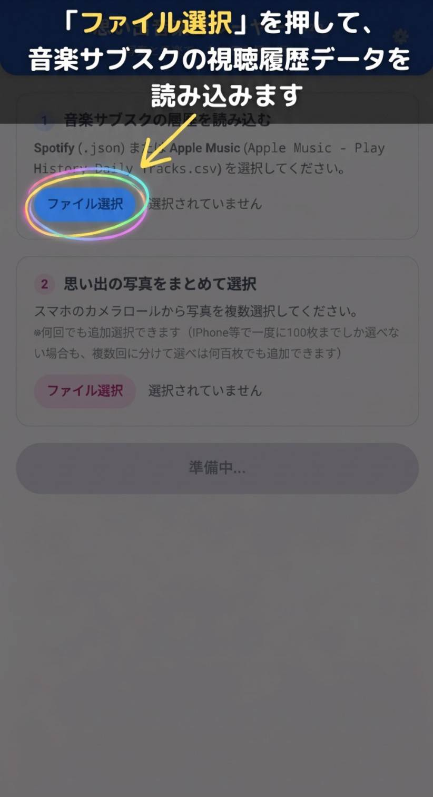

思い出音楽プレーヤー
写真と音楽で、あの日を振り返る
初めての方へ: アプリの操作説明
写真や履歴の読み込み手順を確認できます
1 音楽サブスクの再生履歴を読み込む（※スライドショーCで使用）
Spotify の再生履歴ファイル (.json) または Apple Music の再生履歴ファイル (Apple Music - Play History Daily Tracks.csv) を選択してください。
2 思い出の写真をまとめて選択
思い出の写真を複数選択してください。
※何回でも追加選択できます
プライバシー保護について
選択された写真データはお使いの端末（ブラウザ）内でのみ一時的に処理され、外部サーバーへ送信・保存されることは一切ありません。ページを閉じたりリロードすると、写真データは安全に完全消去されます。
この日の写真はありませんでした
前後の日付に移動するか、写真を追加できます
この写真の表示形式は非対応です
（JPEGまたはPNG形式の写真を推奨します）
スライドショーA（BGMなし・無音でスライドショーを再生中）
BGMを流さずに写真のスライドショーのみをお楽しみいただけます
🎵 選択中の楽曲
曲名
アーティスト名
この日のプレイリスト (TOP10)
タップした曲がすぐに再生されます
📅 日付ジャンプ
📸 写真がストックされている日
📅 Billboard JAPAN 週間TOP10
Billboard JAPAN Hot 100 週間チャート
iTunes Storeで公式音源を検索中...
追加したい曲を検索してください。
※最大10曲まで追加可能です。
⚙️ 設定
📅 振り返りたくない期間を非表示
🚫 設定中の非表示期間
利用モードの切り替え 実験用モード
被験者用の「実験用モード（戻り制限・アンケート確認あり）」と、通常用の「自由鑑賞モード（制限なし）」をいつでも切り替えられます。
アプリ操作説明ガイド
1 / 10
ステップ 1: 音楽サブスク履歴の読み込み
「ファイル選択」を押して、音楽サブスクの視聴履歴データを読み込みます

利用モードの選択
ご利用の目的に合わせてモードを選択してください
※画面右上の ⚙（設定）からいつでもモードを切り替えられます
アンケート回答はお済みですか？
次のスライドショーへ切り替える前に、現在のスライドショーのアンケート回答を完了してください。
実験の公平性（順序効果の防止）のため、一度切り替えると直前のスライドショーには戻れなくなります。必ず現在のスライドショーのアンケートに回答してから次へお進みください。
全スライドショーの鑑賞完了！
すべてのスライドショーの鑑賞およびアンケートへのご協力、誠にありがとうございました！
これで実験手順はすべて完了です。今後は「自由鑑賞モード」に切り替えて、すべてのスライドショー（A / B / C）を自由にお楽しみいただけます。